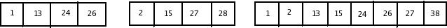

An Example of how the merge routine works is provided for the following input.
If the array a contains 1,13,24,26 and b contains 2,15,27,38 then the algorithm proceeds as follows:
First, a comparison is done between 1 and 2. 1 is added to c and then 13 and 2 are compared.
2 is added to c and then 13 and 15 are compared.
13 is added to c and then 24 and 15 are compared. This proceeds until 26 and 27 are compared.
26 is added to c and the array a is exhausted.
The remainder of the b array is then copied to c.

The time to merge two sorted list is clearly linear, because at most n-1 comparisons are made , where n is the total number of elements. To see this, note that every comparison adds an element to c except the last which adds atleast two.